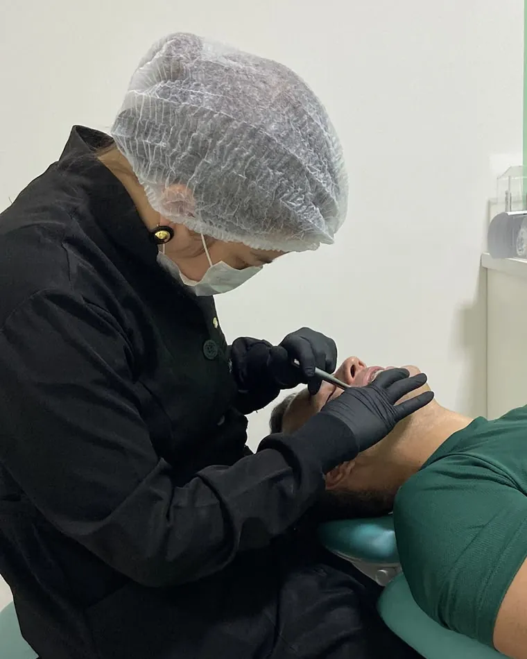
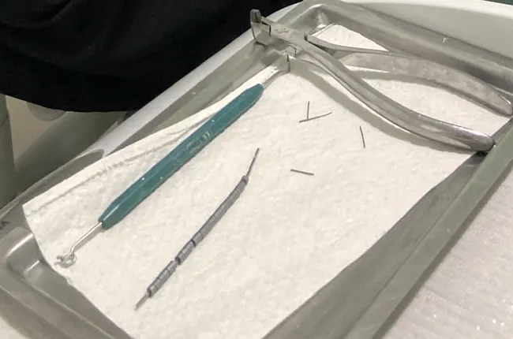
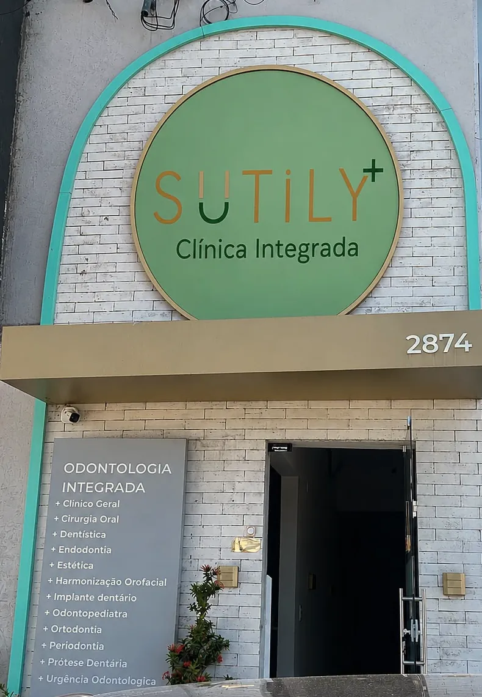

Cena 1 · A profissional
Cirurgiã-dentista à frenteda Sutily Mais


Cena 2 · O cuidado
Odontologia integrada,cuidado individualizado

Cena 3 · A clínica
Clínica Integrada
Nova Parnamirim · nº 2874Parnamirim/RN